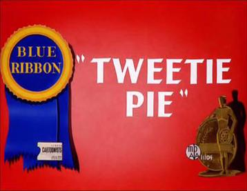
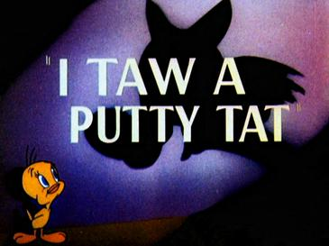
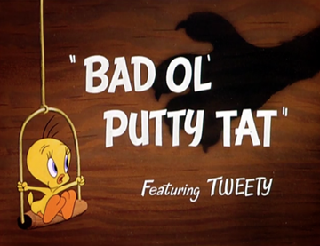
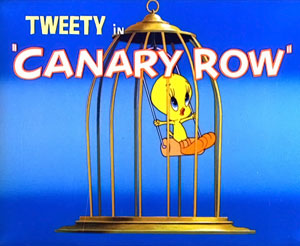
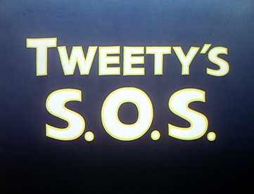
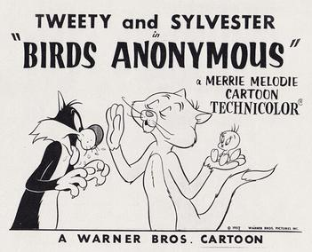
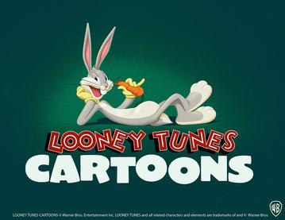
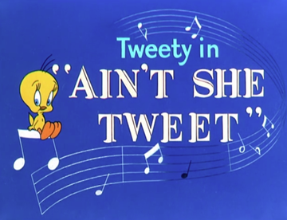

>


Tweetie Pie is a 1947 Merrie Melodies cartoon directed by Friz Freleng.
4
I Taw a Putty Tat is a short Merrie Melodies animated cartoon released on April 2, 1948

Bad Ol' Putty Tat is a 1949 Merrie Melodies animated cartoon released by Warner Bros

Canary Row is a 1949 Warner Bros. Merrie Melodies short directed by Friz Freleng, written by Tedd Pierce

Tweety's S.O.S. is a Merrie Melodies cartoon featuring Sylvester and Tweety. It was directed by Friz Freleng.

Birds Anonymous is a 1957 Merrie Melodies animated short, directed by Friz Freleng

Looney Tunes Cartoons is an American animated web television series developed by Peter Browngardt
Space Jam: A New Legacy (also known as Space Jam 2) is an upcoming 2021 American

Ain't She Tweet is a Looney Tunes (reissued as a Blue Ribbon Merrie Melodies in 1961)